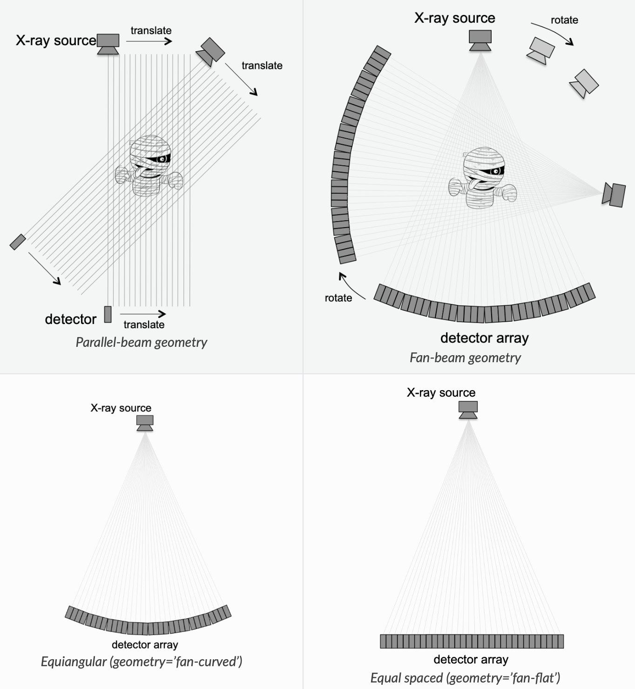
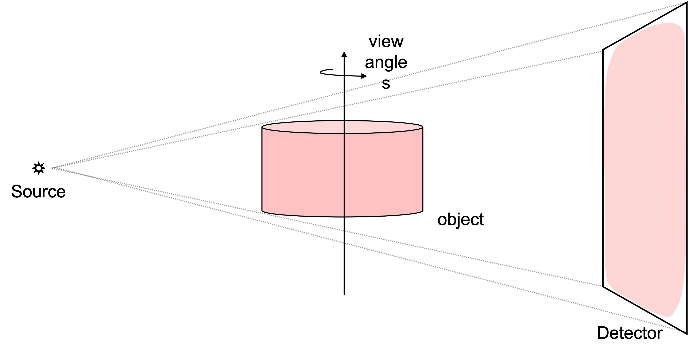
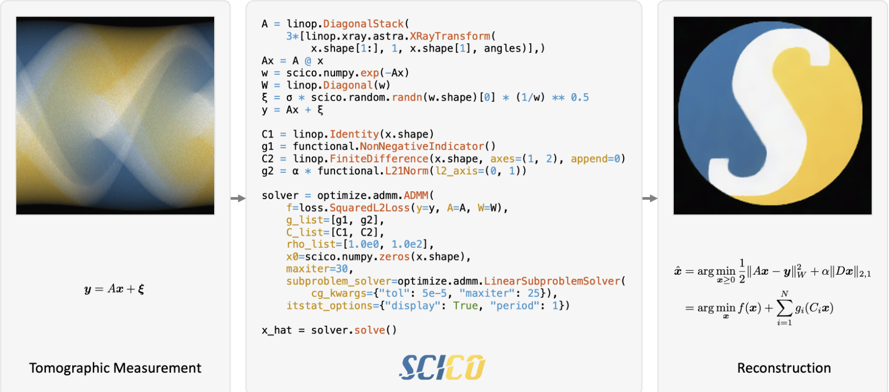

Open-source Software
Below are open-source software packages I have contributed to, spanning model-based iterative reconstruction algorithms for X-ray CT and general computational imaging frameworks.
SVMBIR
Super-Voxel Model Based Iterative Reconstruction
SVMBIR is a fast Python implementation of the Super-Voxel Model Based Iterative Reconstruction (SVMBIR) algorithm for 2D and 3D tomographic reconstruction. It uses a q-GGMRF prior model and a parallel-beam or fan-beam geometry, delivering high-quality reconstructions from limited or noisy projection data significantly faster than conventional FBP methods.

MBIRCONE
Model-Based Iterative Reconstruction for Cone-beam CT
MBIRCONE extends model-based iterative reconstruction to cone-beam CT geometry, which is widely used in industrial non-destructive evaluation, dental imaging, and C-arm systems. It leverages the separable footprint projection model developed during my PhD research to achieve efficient 3D reconstruction with advanced prior models, enabling high-quality imaging from limited angle or noisy projection data.

SCICO
Scientific Computational Imaging COde
SCICO is a Python package developed at Los Alamos National Laboratory for solving the inverse problems that arise in scientific imaging applications. It includes a growing suite of proximal algorithms, including ADMM, PDHG, and PGM, as well as a library of image reconstruction operators and regularizers. SCICO is built on JAX, enabling GPU acceleration and automatic differentiation throughout.
